O intercâmbio gasoso materno-fetal é umas das principais funções placentárias. Sobre esse mecanismo, assinale a alternativa correta.
No período intrauterino, as particularidades da circulação fetal favorecem ao aporte de sangue rico em oxigênio para o Sistema Nervoso Central fetal. A intercomunicação responsável por esse fenômeno é:
Durante a gestação qual modificação fisiológica ocorre no sistema respiratório?
Gestantes que adotam dieta vegetariana frequentemente têm deficiência de:
Gestante, 11 semanas, dá entrada no pronto-socorro obstétrico com quadro de sangramento vaginal importante há quatro horas. Ao exame: eupneica, hipocorada 3/4+. PA = 80x40 mmHg e FC = 110 bpm. Hemoglobina = 6,9 g/dL. Toque vaginal: colo uterino impérvio. Nesse caso, qual é a conduta a ser adotada?
Primigesta com 21 semanas, assintomática, apresenta, na consulta de rotina pré-natal, toque vaginal com colo 80% apagado com 3 cm de dilatação. Nesse caso, qual é a conduta mais adequada a ser adotada?
Qual exame apresenta evidência científica que justifique uma solicitação na investigação da causa de abortamento habitual?
Paciente foi submetida a videolaparoscopia por gestação ectópica tubária. Durante o procedimento, foi possível retirar o material e manter a tuba afetada. No sétimo dia de pós-operatório, o nível de hCG era semelhante ao pré-operatório. Nesse caso, qual é a conduta inicial para o melhor cuidado dessa paciente?
Primigesta, oito semanas de gestação, com queixa de dor abdominal aguda, dor no ombro direito ao deitar e mal-estar ao car de pé. Ao exame físico, encontra-se pálida, PA = 80x60 mmHg, FC = 130 bpm, abdome doloroso à palpação e pequena quantidade de sangue ao exame especular; colo fechado, útero doloroso ao toque; anexos não palpáveis. Ultrassonografia indisponível no momento. Considerando esse quadro clínico, qual conduta deve ser adotada para o melhor cuidado da paciente?
Mulher, 23 anos de idade, relata sangramento vaginal intermitente há sete dias e atraso menstrual de oito semanas. Ao exame pélvico, presença de sangue em fundo de saco, ausência de sangramento ativo e colo uterino fechado. Dosagem de Beta-hCG 36500 UI e ultrassonografia demonstrada na imagem a seguir. Nesse caso, qual conduta deve ser adotada para o melhor cuidado da paciente?
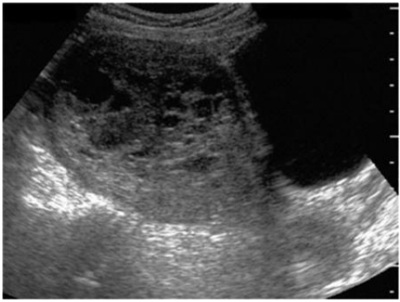
Primigesta, 28 semanas, apresenta náuseas, vômitos, perda ponderal (6%) e episódios frequentes de diarreia líquida há duas semanas. Traz resultado de exame parasitológico de fezes que evidenciou Nesse caso, qual é a melhor conduta a ser adotada para a gestante?
Sobre o uso da vacina meningocócica em gestantes não imunizadas, assinale a alternativa correta.
Primigesta de 32 anos com gestação inicial pede orientação sobre atividade física: treina 4-5 vezes/semana – corrida de 9 km a 10 km/h. Não há achados significativos na história médica e no exame físico. Paciente nega queixas atuais. Nesse caso, qual é a orientação adequada nesse momento?
Primigesta, nove semanas de gestação, queixa-se de náuseas e vômitos há 20 dias e salivação excessiva diária. Relata episódios de vômitos nas últimas 24 horas. Está em uso de antiemético oral, sem melhora. Desde o início da gravidez, relata ter emagrecido 5 kg. Exames laboratoriais do pré-natal de rotina apresentam-se normais e não tem doenças prévias. Exame físico: regular estado geral, corada, desidratada ++, afebril, peso atual 55 kg, PA = 110 x 60 mmHg, FC = 105 bpm. Nesse caso, qual é o diagnóstico e conduta inicial para o melhor cuidado da gestante, respectivamente?
Sobre o uso do fórcipe na variedade de posição occipito-púbica, assinale a alternativa com a descrição da melhor técnica na utilização desse instrumento.
Parturiente, 2G 1P (vaginal), 38 semanas, sem complicações obstétricas. Encontra-se em período expulsivo há duas horas, sem analgesia, com sinais de exaustão materna. Altura uterina de 34 cm. Toque: dilatação total, bolsa rota, OP, bossa discreta, plano +4 de De Lee, bacia de dimensões normais. A cardiotocografia está apresentada na imagem a seguir. Nesse caso, qual deve ser a conduta imediata para auxiliar o parto, oferecendo o melhor cuidado para a saúde materna e fetal?
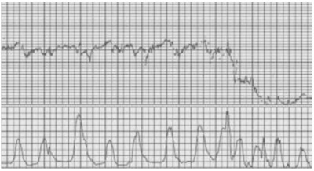
Primigesta, 39 semanas, com óbito fetal, está recebendo, por via intravenosa, ocitocina diluída em solução glicosada, 40 mUI/min, para indução do trabalho de parto. Apresenta cefaleia importante, náuseas, vômitos e convulsão tipo grande mal. Nesse caso, qual é a principal hipótese diagnóstica?
Primigesta, 38 semanas, é trazida ao pronto atendimento no período expulsivo do parto pélvico. Houve desprendimento do polo pélvico e dos ombros, mas não houve desprendimento da cabeça. Nesse caso, assinale a alternativa que apresenta a melhor sequência de manobras para solução desse problema.
O gráfico apresentado na imagem a seguir representa as curvas médias da duração do trabalho de parto, de acordo com a paridade, em gestações únicas de termo com trabalho de parto espontâneo, que evoluíram para parto vaginal com resultados neonatais normais (estudo de Zhang et al. 2010). Considerando esse gráfico, assinale a alternativa correta.
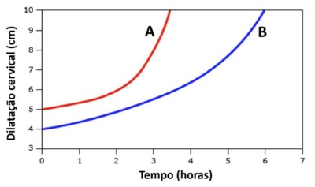
Na revisão de canal de parto, após parto precipitado, foi observado aumento do sangramento vaginal e verificada laceração perineal conforme apresentado na figura a seguir. Nessa condição, qual é o tipo de laceração apresentada?
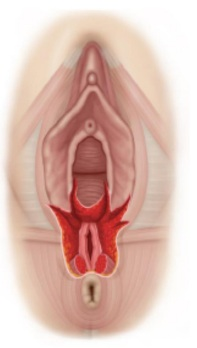
GII, PI (PC), 38 anos de idade, 41 semanas em fase ativa de trabalho de parto. A cardiotocogra a mostrou bradicardia sustentada com desacelerações tardias. Apresentou dor abdominal súbita, lancinante e interrupção das contrações. Ao exame físico: FC = 122 bpm, PA = 80 x 40mmHg, FR = 32 irpm. Atividade uterina ausente. Não foi evidenciado sangramento vaginal. Nesse caso, qual é o diagnóstico e a complicação mais frequentes, respectivamente?
Parturiente, primigesta, 40 semanas, feto único e vivo. No início da fase ativa, apresenta a cardiotocogra a conforme imagem a seguir. Ao exame de toque, o colo é médio, pérvio para 5 cm, apresentação cefálica, plano -2 e bolsa íntegra. Nesse caso, qual a conduta para o melhor resultado materno e fetal?
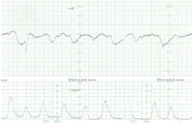
Primigesta, 37 anos de idade, gestação de 40 semanas e dois dias , compareceu para exame de per l biofísico fetal (PBF), que revelou os seguintes achados: cardiotocogra a conforme imagem a seguir, nenhum episódio de movimento respiratório fetal, um movimento de extensão e exão de membros superiores do feto, e maior bolsão de líquido amniótico conforme imagens a seguir. Nesse caso, qual é o resultado do exame e qual é a interpretação?
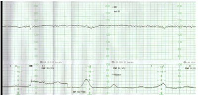
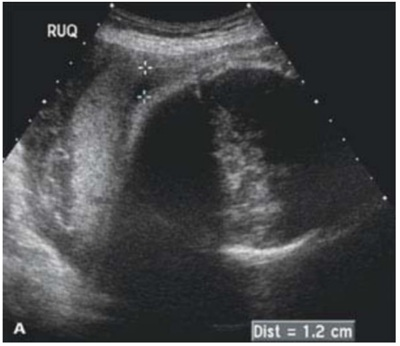
Parturiente, primigesta de 37 semanas, não fez acompanhamento pré-natal, é internada no início do trabalho de parto. Ao exame físico: sinais vitais normais, altura uterina de 33 cm, BCF presentes, dinâmica uterina de 2 a 3 contrações fracas, toque colo esvaecido em 70%, dilatado para 4 cm, bolsa íntegra, cefálico. A cardiotocogra a realizada está apresentada na imagem a seguir, mantendo o padrão por 40 minutos. Nesse caso, o diagnóstico provável e a conduta a ser adotada, são, respectivamente:
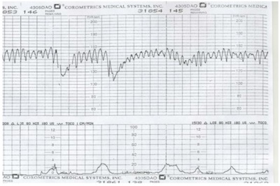
Gestante de 41 semanas e um dia, G2 P1 (cesárea), procura a maternidade para resolução da gestação. Nega complicações na gestação. Ao exame físico: PA = 120 x 88mmHg, altura uterina de 35 cm, BCF = 144bpm, apresentação cefálica, colo dilatado 1 a 2 cm, esvaecido 30%, altura da apresentação – 2 do plano De Lee, colo amolecido e posterior, dinâmica ausente, bolsa íntegra. Nesse caso, qual é a conduta inicial para o melhor cuidado dessa gestante?
No que se refere à indução de parto em pacientes com cesariana anterior e feto vivo com colo favorável (índice de Bishop > 6), é correto afirmar:
O bloqueio da produção de leite imediato em puérpera que não iniciou o aleitamento, e com contraindicação para amamentação, mais adequado é:
Lactante, no 14º dia após o parto, solicita orientação, pois apresenta baixa produção de leite. Nesse caso, a fase da lactação envolvida e a conduta a ser adotada são, respectivamente:
Puérpera, 48 horas pós-cesárea, com febre de 39º C, PA = 100x80 mmHg, FC = 90 bpm, rash macular eritematoso com descamação, creatinina = 0,9 mg/dL. Nesse caso, a antibioticoterapia inicial deve incluir:
Sobre a realização de tocólise no trabalho de parto prematuro, assinale a alternativa correta.
Durante a assistência a um parto gemelar, após o nascimento do primeiro feto, o segundo se apresenta em situação transversa e bolsa rota. Nessa situação, qual é a próxima conduta a ser adotada para melhor assistência ao parto do segundo gemelar?
Gestante 27 anos, G3 P2 A0 (2 cesáreas), grupo sanguíneo A negativo é admitida em trabalho de parto com 37 semanas. Na admissão, o teste de Coombs indireto da paciente foi positivo com titulação de 1:4. Tipagem do recém-nascido A positivo. Paciente recebeu imunoglobulina anti-D com 28 semanas. No que se refere à profilaxia da aloimunização no pós-parto dessa paciente, é correto afirmar:
Gestante de 27 semanas interna por sangramento vaginal abundante e morte fetal. Paciente consciente e responsiva. PA = 94x50, FC = 110 bpm, SpO₂ = 97%, FR = 13 mrpm, dinâmica uterina 4/10 min e colo dilatado 5 cm, médio, 100% apagado, apresentação pélvica completa, membranas íntegras. Iniciada infusão rápida de 1.500 mL ringer lactato. Hb = 10,4g/Dl, Ht = 33% Leucócitos = 13.000/mm³(5% formas jovens), plaquetas = 100.000, brinogênio 150mg/dL, creatinina = 0,9 mg/dL TP/RNI 1,2. Nesse caso, qual é a conduta a ser adotada?
Gestante, G5 P4 (2PC). Em exame de ultrassonogra a realizado com 32 semanas, é detectada a imagem apresentada a seguir. Nesse caso, qual é a conduta no parto para prestar o melhor cuidado a essa paciente?
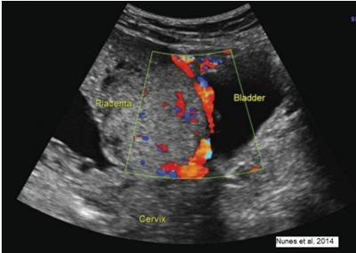
Secundigesta, 30 semanas, parto normal anterior complicado por retenção placentária. Refere sangramento vaginal enquanto dormia. Ao exame: descorada 1+/4+, PA = 110x70 mmHg FC = 92 bpm. AU = 29 cm, FCF = 148 bpm, dinâmica uterina ausente. Especular: discreto sangramento coletado em fundo de saco. Ultrassonogra a transvaginal demonstrada na imagem a seguir. Nesse caso, o diagnóstico e a conduta a ser adotada são, respectivamente:
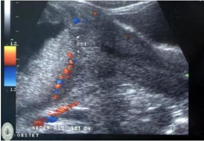
Primigesta, 33 semanas, chega à Unidade de Pronto Atendimento com queixa de dor abdominal e náusea. Ao exame, edema de face e mãos, PA = 180x110 mmHg. AU = 29 cm, BCF = 144 bpm, dinâmica uterina ausente e boa movimentação fetal. Foi solicitada a transferência da gestante para Maternidade de Referência e administrado sulfato de magnésio (dose de ataque). Após 20 minutos, a ambulância para a transferência chegou e a paciente mantinha PA = 180x110 mmHg. Nesse caso, qual a conduta a ser adotada?
Puérpera, 3 horas pós-cesárea, com diagnóstico de eclâmpsia, recebendo 1g/hora de sulfato de magnésio a 50%, apresentou nova crise convulsiva. Ao exame, paciente confusa, desconexa, pressão arterial de 150 x 110 mmHg. Nesse caso, a conduta é:
Mulher com 38 anos de idade, com antecedente de dois partos pré-termo por pré-eclâmpsia sem sinais de gravidade. É hipertensa crônica há cinco anos, em uso de anti-hipertensivo, com bom controle clínico. Refere hábitos saudáveis, com perda de 15 kg no último ano, atividade física regular 3 vezes por semana e dieta hipossódica. Deseja programar nova gestação. Nesse caso, é correto orientar que
Primigesta com 37 semanas, bem datada e com pré-natal sem intercorrências, apresenta ao exame ultrassonográ co feto com peso estimado em 2.205 gramas (abaixo do percentil 3), em apresentação cefálica. Líquido amniótico com maior bolsão vertical de 3 cm e cardiotocografia normal. O exame de Dopplervelocimetria está apresentado a seguir. Nesse caso, qual a conduta a ser adotada?
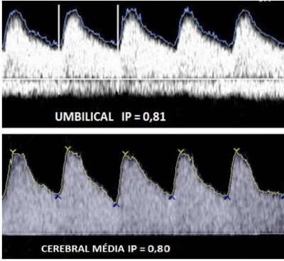
Revisar: possível letra faltando em enunciado
Gestante, 21 semanas, vem à consulta pré-natal. Não fez nenhum dos exames anteriormente solicitados. Queixa de dor lombar difusa a leves esforços. Nega doenças prévias. Refere peso pré-gestacional de 82 kg, Altura de 158 cm, Peso atual: 96 kg. Considerando a disponibilidade técnica adequada, a melhor conduta em relação ao diagnóstico do diabetes gestacional é solicitar:
Gestante em uso de insulina para tratamento de hiperglicemia na gestação – diagnóstico por teste oral de tolerância à glicose (TOTG) com valores de 105 / 180 / 140, evoluiu para parto vaginal sem intercorrências. Nesse caso, qual é a orientação pós-parto adequada?
Gestante 39 semanas, portadora de HIV há três anos, com seguimento adequado em uso de terapia antirretroviral (TARV) com carga viral <50 cópias/mL na 34ª semana. Queixa de perda de líquido há três horas e contrações. Ao exame: 6 cm de dilatação, esvaecimento de 60%, com saída de líquido claro com grumos, apresentação cefálica, BCF = 155 bpm. Nesse caso, qual é a conduta a ser adotada?
Gestante 15 semanas, com quadro de exantema maculopapular em tronco e membros, envolvendo mãos e plantas pés, icterícia, febre, faringite, hepatite, alopecia e lesões em mucosas apresentadas na imagem a seguir. Esse quadro clínico descrito é compatível com:
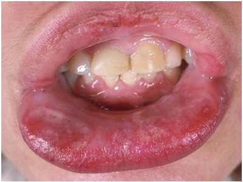
Gestante, 12 semanas, foi ao pré-natal com resultados de exames demonstrados na imagem a seguir. Nesse caso, qual é o diagnóstico e a conduta a ser adotada, respectivamente?
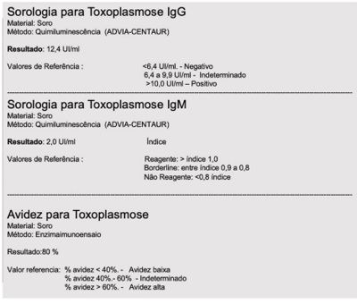
Gestante de 22 semanas procura atendimento por febre há três dias, prostração, coriza e tosse. Nega dispneia ou queixas obstétricas. Está consciente, bom estado geral. Esquema vacinal Covid-19 com duas doses. Sinais vitais: PA = 90x50 mmHg, FR = 25 mrpm, SpO₂ = 96%, Tax = 38,0 c, ausculta pulmonar: sem ruídos adventícios BCF = 150 bpm, dinâmica uterina: ausente. Nesse caso, qual é a conduta inicial a ser adotada?
Gestante com 31 semanas, com quadro gripal há oito dias e teste para Covid-19 positivo. Nega vacinação para Covid-19. Ao exame físico, paciente dispneica, PA = 130x80 mmHg, FC = 108 bpm, Tax = 38.8º C, FR = 25 irpm, Saturação de oxigênio = 94%, ausculta respiratória aparentemente normal. Altura uterina = 30 cm, BCF = 144 bpm, DU ausente. Colo fechado. No que se refere ao quadro dessa gestante, é correto afirmar:
Gestante, 27 semanas, comparece à consulta com queixa de disúria, polaciúria e traz resultado de urocultura da última semana evidenciando infecção por E. coli, sensível a ampicilina, ceftriaxona, nitrofurantoína e nor oxacino. Nega morbidades, mas relata já ter tido dois episódios de infecção do trato urinário (ITU) nesta gravidez. Exame sem alterações. Nesse caso, qual é a conduta a ser adotada?
Gestante portadora de anemia falciforme relata que na gestação anterior teve múltiplas internações por crises álgicas, piora da anemia e síndrome torácica aguda com 33 semanas e necessidade de eritrocitaférese. Atualmente está com oito semanas de gestação não programada, faz uso de hidroxiureia, com bom controle clínico. Qual é a orientação para o melhor cuidado pré-natal dessa paciente?
Gestante, 30 semanas, relata adinamia e fraqueza. Em uso de 40 mg de ferro elementar ao dia. Exames laboratoriais: Hb = 9,0 g/dL, Htc = 29,0 %; HCM = 28 g/dL, VCM = 70 fL, ferritina = 15 ng/mL, ferro sérico = 35 mcg/dL. Nesse caso, qual é o provável diagnóstico e conduta a ser adotada, respectivamente, frente aos exames apresentados?
Primigesta, 15 semanas, asmática desde a infância, em uso de budesonida (200 mcg - 12/12h). Refere a última crise dois meses antes da gestação. Procura pronto-socorro referindo falta de ar e chiado no peito, que iniciou há duas horas. Ao exame físico: FR= 24 bpm, FC = 100 bpm/min, saturação de O₂ de 97%. Ausculta pulmonar: presença de sibilos disseminados. AU = 16 cm, foco = 155 bpm. Nesse caso, qual medicação deve ser prescrita?
Primigesta, 35 semanas de gestação, comparece em consulta de pré-natal queixando-se de prurido intenso. Ao exame físico apresentava pápulas e placas urticariformes com halo branco em tronco, conforme apresentado na imagem a seguir. Nesse caso, o diagnóstico provável e o tratamento inicial para a melhora da gestante são, respectivamente:
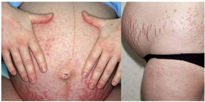
Primigesta, de 10 semanas de gestação, engravidou por técnica de reprodução assistida, vem à consulta com resultados de exames. Refere muita náusea e vômitos frequentes, palpitações e sudorese. Faz uso de progesterona vaginal e ácido fólico, nega outras medicações ou suplementos. Exame obstétrico compatível com a idade gestacional. PA = 110x76 mmHg, FC = 100 bpm, T = 36,4º C, FR = 16 ipm, SpO₂: 99% em ar ambiente. Exames laboratoriais disponíveis: TSH = 0,05 mU/L e T4 livre = 1,9 mg/dL. Nesse caso, qual é a conduta a ser adotada diante os resultados dos exames tireoidianos?
Gestante com 12 semanas, 3G 0P 2A, assintomática, comparece na consulta de pré-natal trazendo resultados dos seguintes exames: TSH = 5,1 mU/L, T4 livre = 0,78 ng/dL. Nesse caso, qual é a melhor conduta a ser adotada para essa gestante?
Primigesta, 33 semanas de gestação gemelar, queixa-se de prurido corporal, principalmente em mãos e pés, com aumento progressivo nas últimas semanas e piora à noite. Nega dor abdominal, diarreia, vômitos ou febre. Exames físico geral e obstétrico dentro dos padrões normais. Exames laboratoriais revelam: Hb = 11,4g/dL, leucócitos = 8.300/mm³, TGO (AST) = 65 U/L, TGP (ALT) = 50 U/L, Gama GlutamilTranspeptidase (GGT) = 7 U/L, Bilirrubinas totais = 0, 4 mg/dL, INR = 1,0, Creatinina = 0,6mg/dL, Ácidos biliares = 17 µmol/L (normal até 10 µmol/L), sorologias de rotina negativas. Nesse caso, qual é o diagnóstico provável e a conduta mais adequada nesse momento?
Gestação de 22 semanas que apresenta, na ultrassonogra a morfológica de 2º trimestre, polihidrâmnio e abdome fetal com aspecto demonstrado na imagem a seguir. Nesse caso, qual é o diagnóstico mais provável?
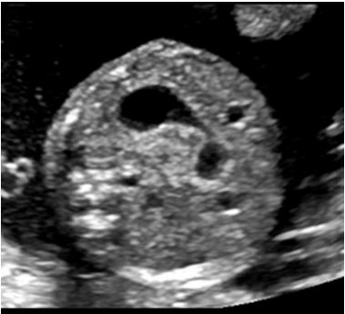
Primigesta, 35 anos de idade, 12 semanas de gestação, foi submetida a ultrassonogra a morfológica de primeiro trimestre cujo resultado está demonstrado na imagem a seguir. Nesse momento, sabendo que a paciente deseja esclarecer o problema o mais rápido possível, qual é o próximo passo para a investigação da condição fetal?
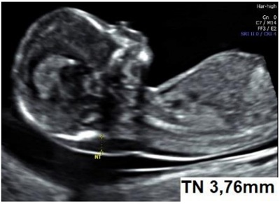
Primigesta, 16 semanas de gestação, apresenta resultado de ultrassonografia com imagem apresentada a seguir. Nessa situação, qual deve ser o próximo exame a ser solicitado na propedêutica pré-natal?
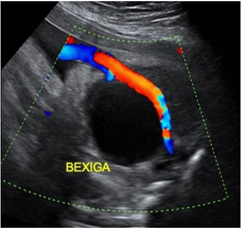
Mulher, 35 anos de idade, com antecedente de uma cesárea, com um lho vivo com 18 meses de idade, está na 38ª semana de gestação e evolui com trabalho de parto complicado por rotura uterina e óbito fetal. Durante a laparotomia sob anestesia geral, o feto morto foi encontrado na cavidade abdominal e o corpo uterino foi reconstruído com sutura ampla na parede anterior. Devido ao risco materno em gravidez futura, foi realizada a laqueadura tubária bilateral. A paciente recuperou-se bem da cirurgia realizada. Sobre essa cirurgia de esterilização realizada, é correto afirmar:
O símbolo da Colaboração Cochrane apresentado na figura a seguir representa, em sua parte central, um gráfico de metanálise de sete ensaios clínicos randomizados. A metanálise utilizada para a criação desse logotipo foi relativa a um estudo sobre gravidez e cuidados perinatais. Cada linha horizontal simboliza o resultado de um desses trabalhos, e o objetivo foi responder à pergunta: o uso de corticosteroides no período próximo ao nascimento de prematuros diminui a mortalidade neonatal? Analisando essa figura sobre o resultado dessa metanálise, é correto afirmar:
Razão de Near Miss Materno RNMM ou Razão de quase perda e Condições Potencialmente Ameaçadoras à Vida CPAV Obstetrícia Considerando os critérios da Organização Mundial da Saúde (OMS) de morbidade materna grave, 2004, assinale a alternativa que apresenta uma ocorrência que deva ser notificada como near miss materno. Respostas: 1 12 23 34 45 56